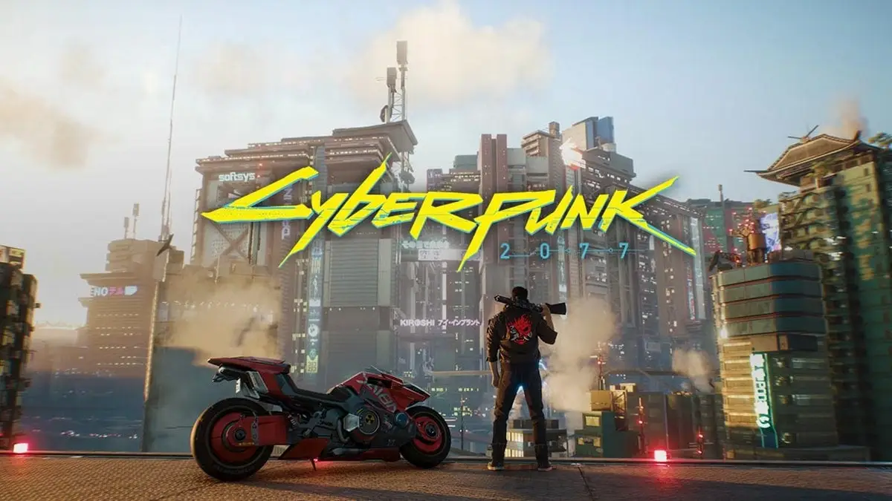
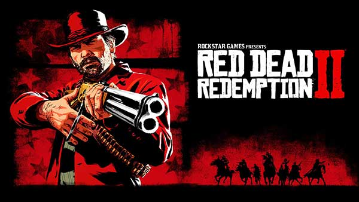

Call of Duty Modern Warfare 2 Remastered İndir

Call of Duty Modern Warfare 2 Remastered İnceleme Aksiyon yeniden başlıyor. Hazır mısın! İlk olarak 2009 yılında piyasaya sürülen Modern Warfare 2 oyununun yenilenmiş bir şekilde piyasaya sürülmesiyle oluşan Modern Warfare 2 Remastered geliştirilmiş grafikler ve keyifli aksiyon dolu oyun yapısıyla övgüleri hak ediyor. Modern Warfare 2 Remastered sürümünde önceki sürümde olduğu gibi 18 adet hikaye yer almakta. Efsanevi Modern Warfare 2 oyununun heyecanını daha gelişmiş grafikler ve efektlerle yaşamak istiyorsanız 2020 yılı çıkışlı Remastered sürümünü denemelisiniz.
Cyberpunk 2077 İndir

Cyberpunk 2077 İnceleme Cyberpunk 2077, tüm oyunseverlerin merakla beklediği oyun çıktı. Cyberpunk 2077 Night City’de geçen RPG türündeki aksiyon dolu bir oyun sizleri bekliyor. Kanun kaçağı paralı asker V karakterinde heyecan dolu bir maceranın kapılarını arala. Night City’de amansız bir mücadele seni bekliyor. Geliştiriciliğini CD Projeck Red firmasının yaptığı oyunda çeşitli silahlar, dövüş teknikleri vb. birçok ayrıntı yer almaktadır. V karakterinin bir diğer özelliği ise siber yazılımlara sahip bilgisayar korsanı olarak karşımıza çıkmaktadır. Oyundaki karakterimiz de yer alan gelişmiş silahların yanı sıra sibernetik ekipman da yer almaktadır. Sibernetik ekipmanı ihtiyaç duyduğunuz birçok yerde kullanarak oyunda ilerlemeniz daha kolay hâle gelecektir.
Red Dead Redemption 2 İndir

Red Dead Redemption 2 PC İnceleme Efsane oyunun PC sürümü nihayet çıktı. Geçen yıl playstation ve xbox oyun konsollarına çıkan RDR2 oyununun pc versiyonu 1 yıl aradan sonra oyunseverlerle buluştu. Rdr2’de neler mi var; koskoca bir açık dünyada, oyuna başlıyorsunuz. Oyunu FPS veya 3. şahıs olarak oynayabilirsiniz. Eski yaşam vahşi batının tüm güzellikleri sizleri büyülüyor. At sürmenin zevkini, hazzını doyasıya alacağınıza eminim. Doğanın güzelliği ve manzarası sizi oyunun içine çekecek. Yollarda çok sayıda hayvana rastlayabilirsiniz. Normal bir insan yaşantısına sahipsiniz. Karakteriniz acıktığında yemek yemeniz gerekiyor ve bunun için de hayvanları öldürüp, pişirebilir ve afiyetle yiyebilirsiniz..